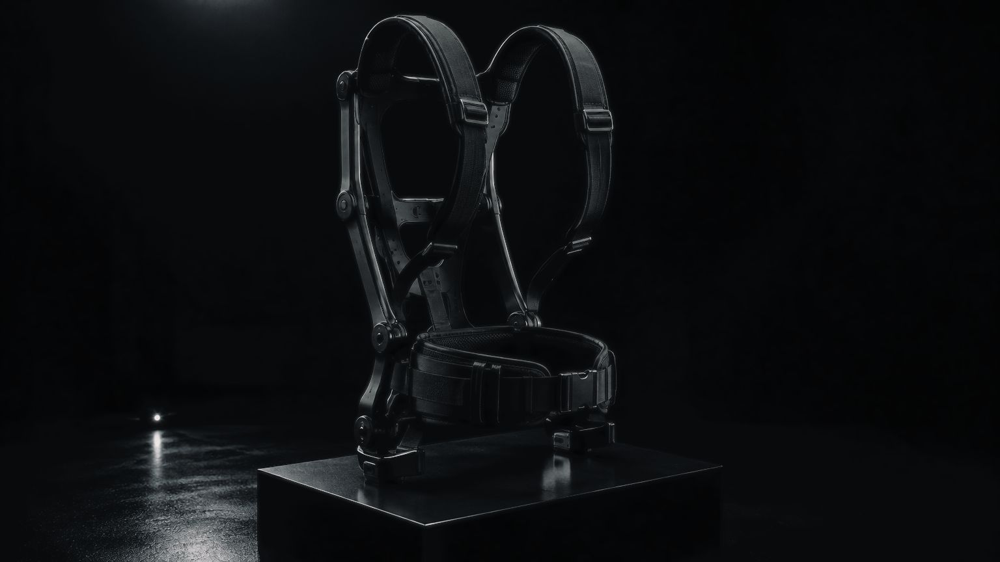
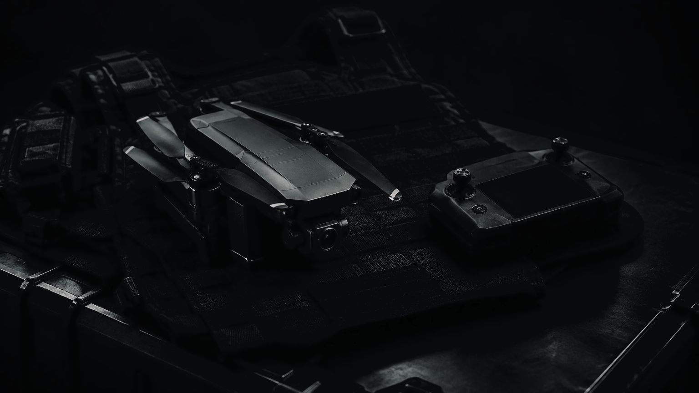

В основе проекта — создание единого комплекта, компоненты которого изначально проектируются с учетом совместимости, эргономики и взаимодействия между собой.
От базового защитного снаряжения до интеллектуальной носимой системы с датчиками, дополненной реальностью и механической поддержкой тела.
WARDEN — не отдельный элемент экипировки. Это комплексная платформа индивидуального оснащения.
Весь комплект работает вместе
Экипировка должна быть системой, а не набором отдельных изделий
Современный комплект военнослужащего может включать бронезащиту, шлем, разгрузочные системы, средства связи, электронику, источники питания и специализированное оборудование.
Каждый дополнительный компонент увеличивает требования к совместимости, распределению массы, удобству и обслуживанию.
WARDEN предусматривает комплексный подход к разработке экипировки.
Посадка защитных элементов, крепления, расположение оборудования, кабельная инфраструктура и распределение нагрузки рассматриваются как части единой конструкции.
Модульная архитектура позволяет формировать различные конфигурации комплекта, сохраняя совместимость между основными компонентами.


Защита. Эргономика. Технологии
Шесть систем одного комплекта
Основа WARDEN — взаимосвязанная линейка индивидуального снаряжения.
Приоритет — эргономика, долговечность, ремонтопригодность и возможность адаптации комплекта под пользователя.
Предусматриваемые направления разработки
Модульные бронежилеты и защитные элементы.
Баллистические шлемы и аксессуары.
Разгрузочные системы и подсумки.
Тактическая одежда и обувь.
Рюкзаки и системы переноски.
Унифицированные крепления и интерфейсы совместимости.
Перспективное направление разработки механических систем поддержки опорно-двигательного аппарата.
WARDEN EXO предусматривает исследование пассивных и активных конструкций для поддержки отдельных участков тела при выполнении физических задач.
Ключевые направления
Пассивные механизмы поддержки.
Активные экзоскелетные модули.
Поддержка спины, ног и плечевого пояса.
Адаптация под антропометрию пользователя.
Совместимость с основными элементами экипировки.
Исследование энергопотребления и эргономики.
Шлем рассматривается не только как элемент защиты, но и как основа для размещения совместимых электронных компонентов.
Перспективная архитектура предусматривает
Интеграцию средств связи.
Подключение аудиоустройств.
Совместимость с носимыми дисплеями.
Подключение камер и датчиков.
Поддержку интерфейсов дополненной реальности.
Унифицированные крепления для совместимого оборудования.
Модульная энергетическая инфраструктура для совместимых носимых устройств.
Планируемые возможности
Централизованное подключение электроники.
Сменные аккумуляторные модули.
Мониторинг состояния источников питания.
Контроль энергопотребления.
Защита электрических цепей.
Унифицированные интерфейсы подключения.
Перспективные системы поддержания комфортных условий при длительном использовании экипировки.
Направления исследований
Носимые системы обогрева.
Активная вентиляция.
Модули охлаждения.
Контроль температуры и влажности.
Интеграция климатических компонентов в одежду.
Энергоэффективное управление климатическими системами.
Специализированные средства защиты для эксплуатации в сложных условиях.
Предусматриваемые направления
Средства защиты органов дыхания.
Защитные костюмы и герметизируемые элементы.
Датчики параметров окружающей среды.
Контроль температуры и качества воздуха.
Совместимость с системами микроклимата.
Информирование пользователя о состоянии подключенных датчиков.
Снаряжение под задачу
Три уровня единой платформы
01 / 03
WARDEN CORE
Базовый модульный комплект
Защитное снаряжение, шлем, одежда, разгрузочная система и вспомогательные элементы, разработанные с учетом единой эргономики и совместимости.
Фундамент платформы WARDEN, на котором строятся последующие конфигурации.
02 / 03
WARDEN ADVANCED
Экипировка с интегрированной электроникой
Расширенный комплект с носимыми датчиками, системой питания, коммуникационными устройствами и возможностью подключения персонального цифрового терминала.
Предусматривает использование совместимых пассивных экзоскелетных модулей.
03 / 03
WARDEN EXO
Перспективный технологический комплекс
Развитие базовой системы с применением активных экзоскелетных компонентов, расширенной носимой электроники, интеллектуальных интерфейсов и специализированных средств защиты.
Исследовательское направление для создания комплексной системы индивидуального оснащения.
Хаб взаимодействует со смартфоном или специализированным КПК, на котором установлена AGATA.
Через единый интерфейс пользователь сможет получать информацию о подключенных устройствах, состоянии аккумуляторов, датчиках и доступных функциях.
02 / 042
Поддержка тела
Модульная экзоскелетная архитектура
Пассивные и активные системы EXO исследуются как дополнительные компоненты экипировки.
Модульный подход предусматривает возможность разработки отдельных систем для спины, ног и плечевого пояса без необходимости полной замены основного комплекта.
03 / 043
Датчики состояния
Носимая сенсорная система
WARDEN предусматривает интеграцию датчиков для получения информации о состоянии оборудования, условиях окружающей среды и отдельных физиологических показателях пользователя.
Данные передаются в персональный цифровой хаб и отображаются через совместимые программные интерфейсы.
04 / 044
Персональные устройства
Расширяемая экосистема оборудования
Модульная архитектура позволяет предусмотреть подключение внешних камер, навигационных устройств, коммуникационных модулей и совместимых робототехнических систем.
Отдельное перспективное направление — интеграция персональных миниатюрных беспилотных устройств для получения дополнительной визуальной информации.
Цифровая экипировка
AGATA и EVA — интеллектуальная основа WARDEN
WARDEN разрабатывается как аппаратная платформа, интегрируемая с программной экосистемой Darlein Defense.
Присоединяйтесь к разработке экипировки нового поколения
Darlein Defense развивает WARDEN как долгосрочный проект создания модульной индивидуальной экипировки с перспективой интеграции носимой электроники и интеллектуальных технологий.
Мы заинтересованы в сотрудничестве с производителями защитного снаряжения, текстильными предприятиями, разработчиками электроники, специалистами по промышленному дизайну и исследовательскими организациями.